| Mask | Superimposed Image |
|---|---|
| 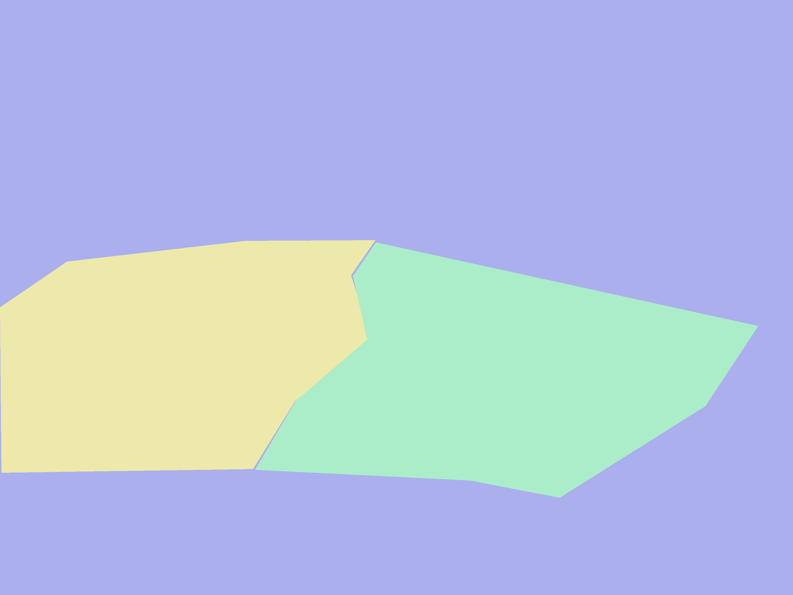 |  |
Jingyun Chen, Socorro Dominguez, Milos Milic, Aditya Sharma
Image Region Optimizing Neural Network(IRONN) has been developed for QIO to leverage Machine Learning (ML) techniques in order to improve ore yields while reducing operational costs. We are providing a Python package that contains a trained neural network that categorises Ore, Dilution Waste and Contamination Waste in candidate images to 85% accuracy. We are also providing two dashboard applications that can be used in assessing image quality.
After a rock face is blasted, operators are required to obtain details from geologists who demarcate different rock types by going through the images taken by the operators. This information loop is necessary in order to collect appropriate blends of different rock types. However, geologists are not available at all times to help the operators make their decisions, which reduces extraction efficiency.
The available data includes 650 labeled images of blasted rock faces from different days and blast sites. These images were collected by the operators (original images) and then hand-annotated by the geologists (reference images). An example of these images is shown below:
| Original Image | Reference Image |
|---|---|
| 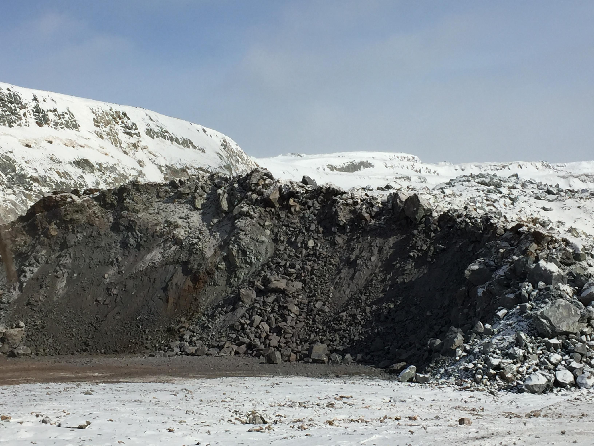 | 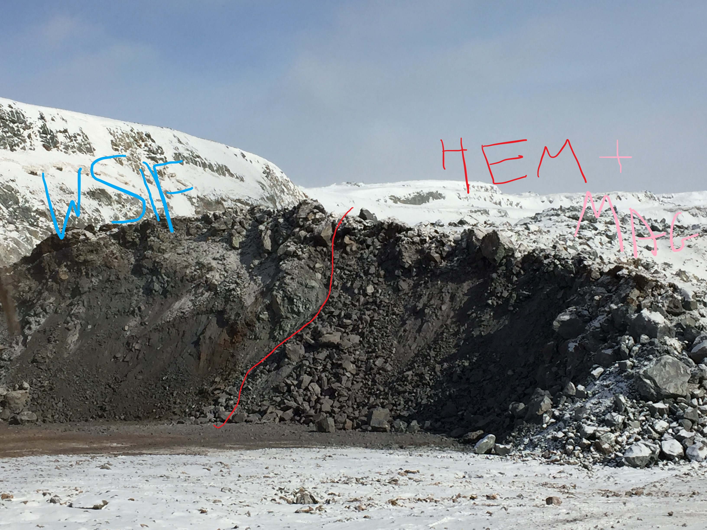 |
We have broken down the problem into the following tangible objectives:
1. Labeling the original images using the reference images: Labeling refers to defining the area on an image that defines a specific rock type. This is the most important task in the project as it is a supervised learning problem. A properly labeled dataset is essential to move forward with building a model that can learn to segment different rock types.
2. Data analysis and feature extraction: Identify image properties that might be useful in differentiating rocks. We identified image properties that might be useful such as colour features of the picture and the camera settings used. This also allows to assess the quality of the original images and improve image collection.
3. Preprocessing images and generating labels for image segmentation: This step involves reading the labels and converting them into masks that will classify each pixel in the image into a rock class or background.
4. Building a ML model: Created a model that can learn different properties of rocks and can segment different rock types based on these learned features.
5. Model prediction: Visualized the model prediction results by superimposing the mask of the predicted labels over the original images. This allows identifying the different rock types on a blasted rock face.
IRONN is a deep learning-based product that segments and classifies different rock types in a blasted rock face image. Using physical characteristics such as rocks’ colour, IRONN can currently segment Ore, Dilution Waste and Contamination Waste with around 85% pixel-wise accuracy.
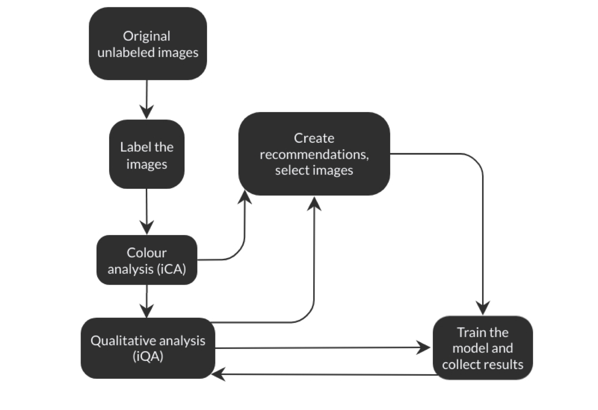
The tangible objectives were addressed using the following Data Science techniques:
1. Labeling using an open source tool: The original images were relabeled using LabelMe. LabelMe allowed us to obtain the coordinates of the polygons along with their class labels, which provided feasible training data. However, it is an open source tool, and it contains some unaddressed software bugs.
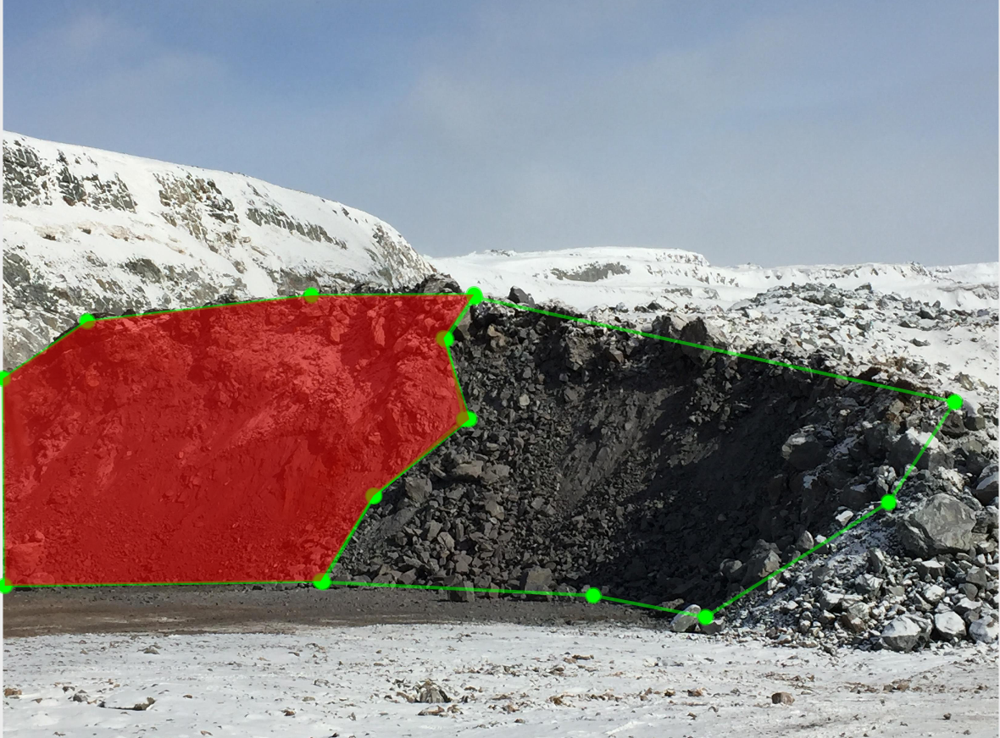
As an improvement, it might be worth considering using a paid labeling tool that will be more robust.
2. Exploratory Data Analysis (EDA) using dashboards: We went through the images manually and programmatically to find useful features and patterns. We extracted image roughness properties on the three colour channels (RGB) from the images in order to study patterns in different rock types. We analyzed the differences in features through a pairwise ANOVA test with post-hoc Tukey in our imbalanced data set. This was done to check for significant differences between different rock types. We also analyzed camera settings data as the images came from different devices. We wanted to see the variability in how the images were taken and if that would affect the model.
For further EDA we built an interactive plotly dashboard named iCA (image Colour Analysis) that helps identify any outliers in order to improve the quality of the training data.
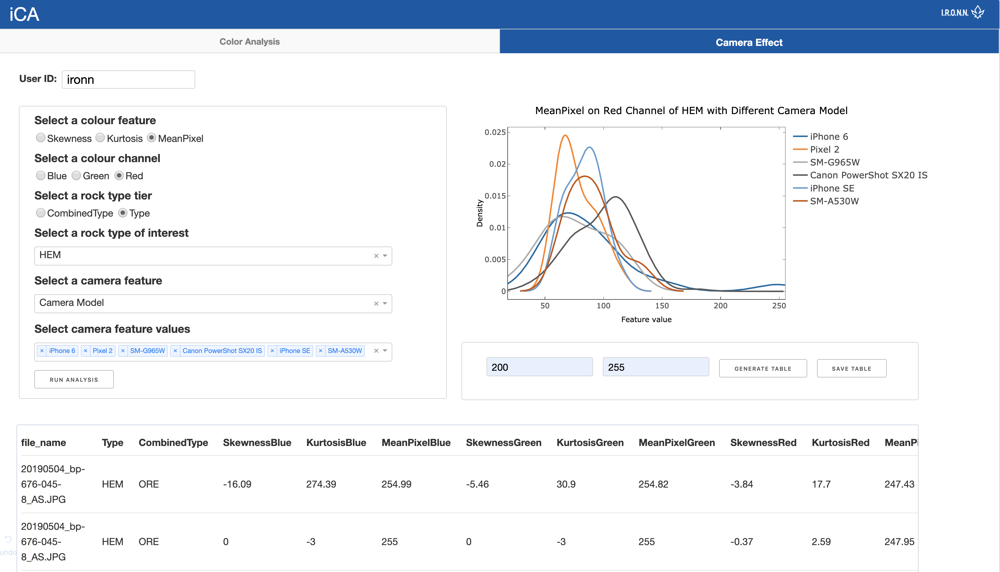
To address data quality assurance, we built an R shiny dashboard named iQA (image Quality Assurance) which can unify the concept of "How should an image be taken?". In this way, better data can be gathered to further develop IRONN.
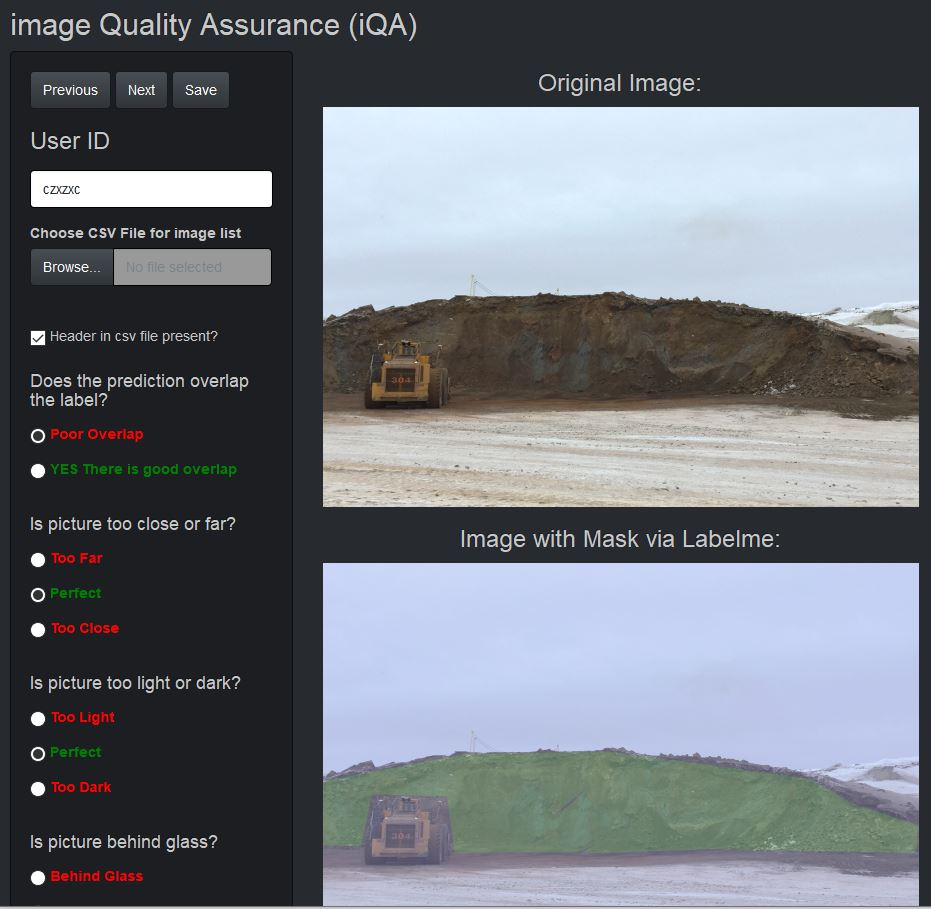
3. Preprocessing the images using python library OpenCV: We read the polygon coordinates and labels to generate masks for each rock type using OpenCV. This created the dataset that can be fed into the model. The dataset specifies the format of the output that will be obtained once the model finishes training and is used for prediction.
| Mask | Superimposed Image |
|---|---|
| 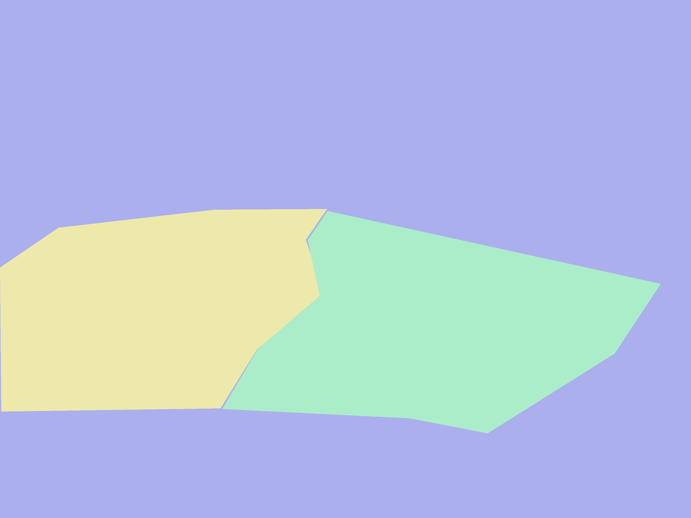 | |
There are other libraries that can be used for processing images such as Scikit-Image and PIL. We chose OpenCV because it has been heavily developed and maintained. Other libraries require more care as they handle image reading and processing differently.
4. Building a deep learning model using Convolutional Neural Network (CNN): We used a CNN-based architecture called Fully Convolutional Networks (FCN) to build and train a model for the segmentation task. We first checked if our model could segment the blasted rock face from the rest of the background (sky and ground). We extracted the convex hull polygon coordinates that included all polygons (masks) in a single polygon and called this a blasted face. Then, we trained the model on this data to the first segment the blasted face and background.
| Image Name | Image |
|---|---|
| Convex Hull |  |
| Mask | 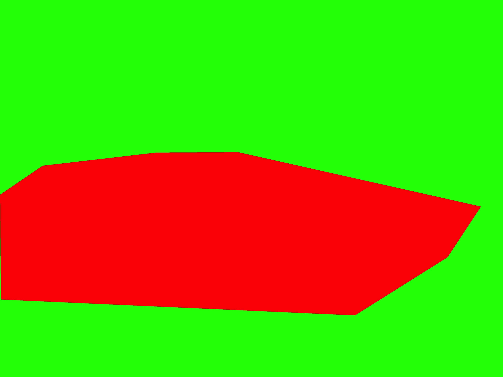 |
| Superimposed Image |  |
We obtained the following results on unseen images:

Since we deemed it possible to train a model that could segment blasted face from the background, we decided to move to the next step and implement a more complex model. We grouped the 8 different types of rocks into three base categories: "Ore", "Dilution Waste", and "Contamination Waste" and modified the code to handle these new classes. We achieved a pixel-wise accuracy of about 85% on the validation set.
Some points to note about this model:
5. Prediction and Visualization: To assess IRONN’s performance, we removed 50 images from the training set and used them as a validation set for visualizing the model performance. Once trained, we predicted on these images and superimposed the prediction.
For the final visualized output, the label output is superimposed on the original images. This is different from the validation during training which divides the training data into an 80-20 split and uses the 80% to train and 20% to validate using metrics such as pixel-wise accuracy and the intersection over union metric. Once finalized, we will train the model on the complete training set with all labeled images and deliver to QIO for further improvement.
Here is an example of an original image, label mask and model prediction:
| Image Name | Image |
|---|---|
| Original Image | 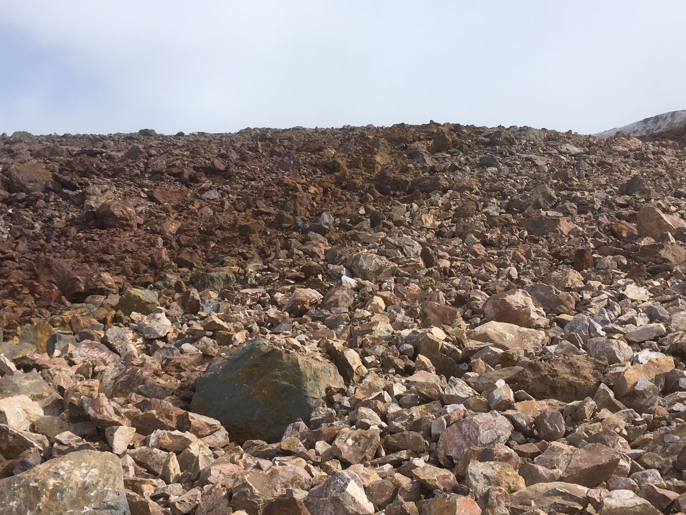 |
| Superimposed Mask Label | 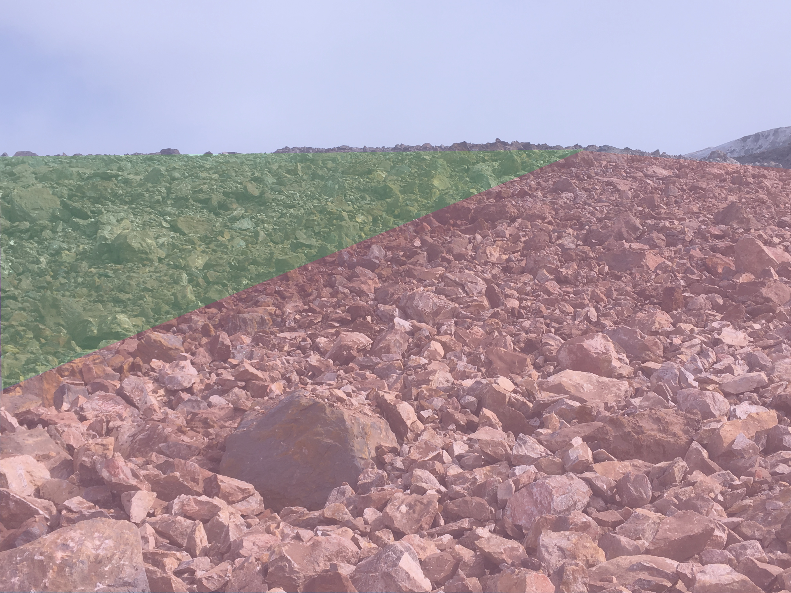 |
| Superimpose Prediction | 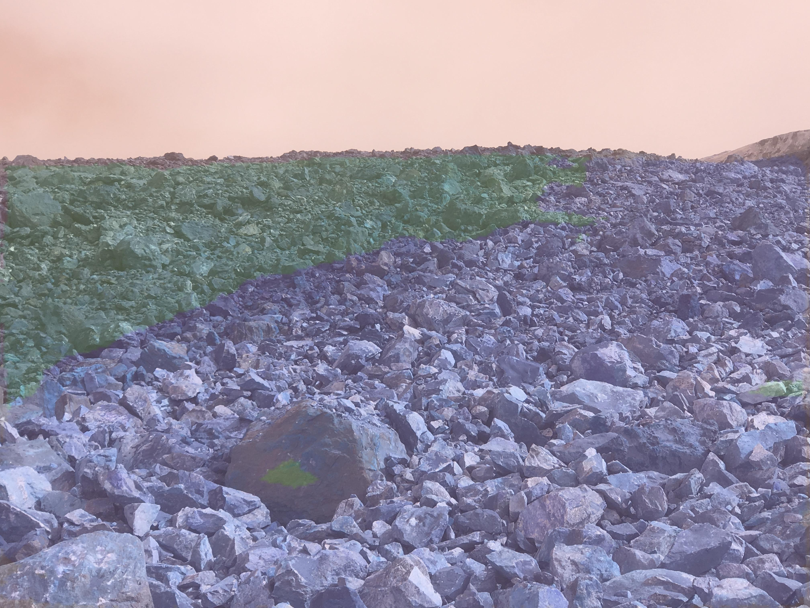 |
We are delivering a data product that consists of the following:
The package is designed so that the model can be retrained easily with new training data or predict over new images using the currently trained model.
We are also providing the following: proper documentation of the code along with clear instructions on how to use the package thorough documentation of the findings during the EDA, for colour and EXIF data analysis. one plotly dashboard to understand better the colour related features and properties (iCA) one R shiny dashboard for quality assurance and data collection improvement (iQA)
The package has been built with the overall pipeline of the project in mind so that any change in the process (eg. adding new images or new rocks) is easy to incorporate.
Our work has answered the question: "Can ML techniques be used to train a model where the image input data is segmented and then used to predict different rock types?" IRONN has proven that it is possible to predict different classes of rock types, although it needs further development in order to segment rocks with fine-grained differences.
In the confusion matrix below, we see the number of pixels classified correctly and incorrectly for each rock type class. Around 95% of the pixels belonging to the ORE are correctly classified by the model.
Confusion Matrix
| Predicted | Background | Ore | CW | DW | ALL |
|---|---|---|---|---|---|
| True | |||||
| Background | 1,553,000 | 43,000 | 1,000 | 9,000 | 1,606,000 |
| Ore | 19,000 | 528,000 | 500 | 11,000 | 558,000 |
| CW | 16,000 | 171,000 | 51,000 | 8,000 | 246,000 |
| DW | 2,000 | 9,000 | 00 | 87,000 | 99,000 |
| ALL | 1,589,000 | 751,000 | 53,000 | 116,000 | 2,509,000 |
Currently, this Python Package needs to be installed in a QIO’s Data Scientist's computer so that results can be reproduced and IRONN can be further developed.
IRONN is a proof of concept and it is not a full-fledged product yet. To our knowledge, there are no software applications that are being used to segment rock types in the mining industry.
IRONN shows that ML architectures are powerful tools that can improve operational costs for QIO. If IRONN is further developed and implemented, mine operators will eventually be able to rely on it to classify rocks and send appropriate blends to the crusher.
In order for IRONN to be used on a daily basis, the following improvements are needed:
New images with better quality have been actively collected. To keep the model performance at its current stage with the 8 rock types, we would need at least double the amount of labeled data that we currently possess. We would encourage to continue developing IRONN so that it can eventually be a complete product.